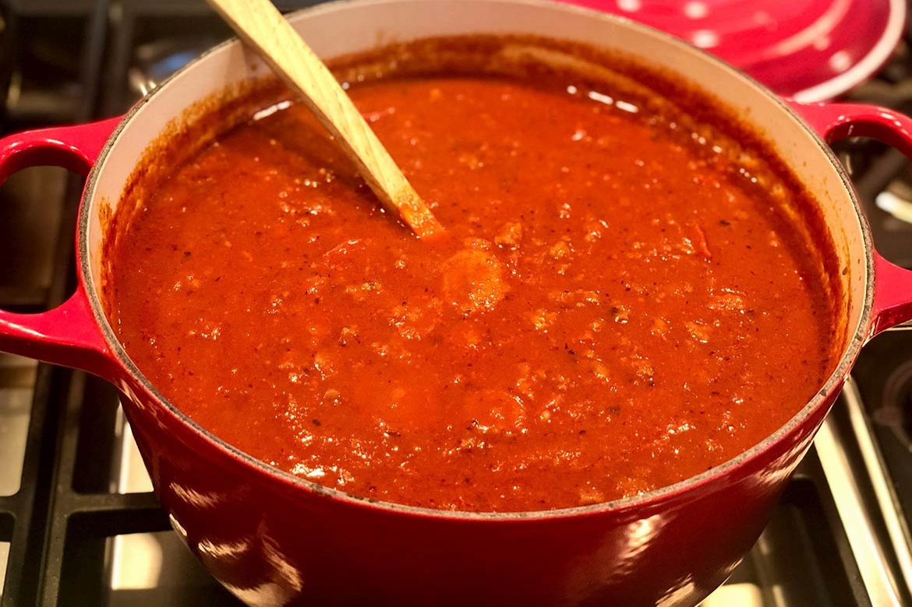

Spaghetti Sauce

Description
Yummy sauce for spaghetti that won't give you food poisoning.
Ingredients
- 2 cans of tomato sauce
- 1 pound of hot italian sausage
- salt to taste
- black pepper to taste
- one large onion diced
- 3 cloves of garlic
- 1 1/2 cups of water
- 1 can tomato paste
- 1 teaspoon dried parsley, oregano, and basil
Steps
- Heat tomato puree in a large pot over medium-low heat; simmer
while prepared the remaining ingredients.
- Heat a skillet over medium heat; cook and stir hot Italian sausage, mild Italian sausage, and ground chuck
until browned and cooked through, 10 to 15 minutes. Season with salt and pepper. Remove cooked sausage and
chuck with a slotted
spoon and transfer to the simmering tomato puree
- Cook and stir onion and garlic in the same skillet used for browning meat until onions are lightly browned,
5 to 8 minutes. Transfer onion mixture to meat mixture.
- Stir water and tomato paste in the same skillet used for onion mixture over low heat until slightly
thickened, about 15 minutes; add to the sauce in the pot. Sprinkle Parmesan cheese, basil, oregano, and
parsley over the sauce; stir to combine.
Simmer over low heat, stirring occasionally, for 3 hours.